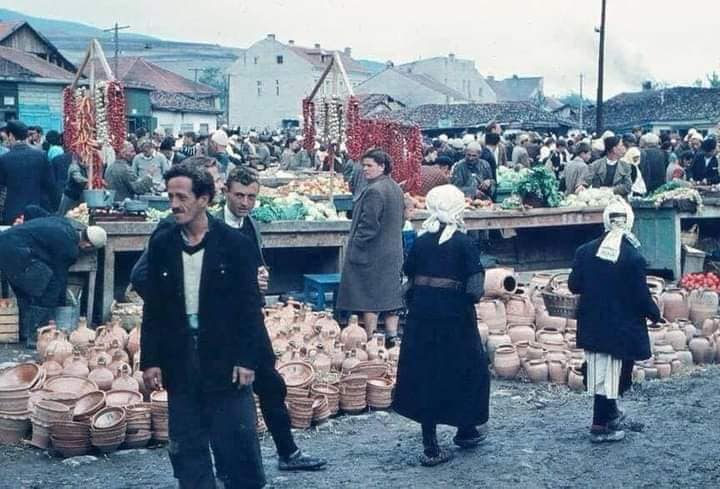

Many scientific findings have proven that settlements around Municipality of Lipkovo go back to the ancient times before our era, during the time of the Illyrians. Many hypothesize that the toponyms were used during the time of the Dardans and Peons. Many escavated clay materials on the location of Drezga-Lopate and Rimnik-Matejce prove that these are ancient settlements. The biggest proof for thesezold settlements are the old well from the Roman time as well as two excavated coffers while building Lipkovo’s artificial lake from 1951 to 1958. Lipkovo was ruled by the Turkish Empire since 1389 to 1912. Old Turkish documents show the collection of taxes in this region call as ‘ Nahija of Old Nagoricane’ until 1915. In 1916 few villages from the region of Lipkovo became part of the municipality of Otlja which numbered 54.000 inhabitants. Many writers, geographers, demographers and other scientific collaborators describe this organized municipal life in this region. Dr. Aslan Selmani has conducted and published newest geographic findings for this region. Municipality of Lipkovo was founded in 1955 during the time of Yugoslavia and was void in 1965. After the Macedonia’s independence on the request of the citizens the municipality of Lipkovo was established once again.
A very big and important event in our history is also the 2001 war
wich mainly took place in our municipality especialy in Sllupcan.
An exploration of the causes of the Macedonian confined ethnic conflict in 2001 suggests that in the first decade of its existence as an independent state (1991–2001), Macedonia did not manage to deal effectively with the major issues that fuelled ethnic tension in the country. These issues were left unaddressed and over time acted as generators of the conflict. The record of ethnic contestation over these issues in the 1990s suggests that the two parties, the Macedonians and Albanians, would probably not have been able to resolve them without the threat of war. The in-depth examination of the major issues of ethnic discord in the country, and the way they were articulated, strongly indicates that the conflict in Macedonia was over symbols. The Ohrid Framework Agreement (OFA), which ended the conflict, effectively closed some of the major issues in ethnic relations, corrected the country's multicultural genome, and improved Macedonia's prospects for stability over the long-term. The early intervention by the international community was a strong factor, which prevented the escalation of the conflict.